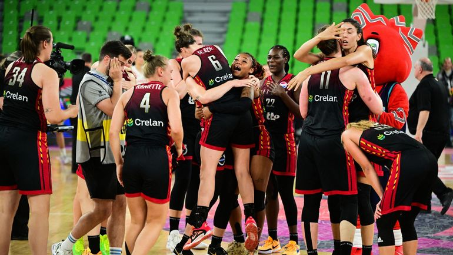

Les Belgian Cats sont allées chercher leur premier titre continental avec les tripes (58-64), ce dimanche soir à Ljubljana en Slovénie. Les Belges ont souffert face à une solide équipe espagnole, qui a fait la course en tête pendant quasi toute la rencontre. Menées durant plus de 35 minutes, les Cats ont pris les commandes à quatre minutes de la fin, portées par les 24 points d'Emma Meesseman, l'une des meilleures joueuses européennes actuellement. Ce quatrième quart temps de feu, a permis à la Belgique de coiffer les Espagnoles en toute fin de rencontre, et de s’installer sur le toit de l’Europe. En demi-finales, la Belgique avait éliminé les Françaises (67-63), qui restaient sur cinq finales consécutives et qui ont remporté la petite finale face à la Hongrie.
Pour le sélectionneur de la Belgique, le Français Rachid Meziane, il s'agit d'un coup de maître. Il avait pris les commandes des Belgian Cats à l'automne 2022, après le Mondial en Australie conclu sur une élimination en quarts de finale. Arrivée sur la scène européenne en 2017 avec une médaille de bronze, la Belgique voit son équipe arriver à maturité lors de ce championnat d'Europe qu'elle a dominé, remportant ses six matches. En finale, seules quatre joueuses ont marqué côté belge. Outre les 24 points de Meesseman, Kyara Linskens a inscrit 18 points, Julie Vanloo 13 et Julie Allemand 9. Allemand a été décisive en fin de troisième quart-temps, ramenant l'écart entre Espagnoles et Belges à cinq points sur deux possessions et deux paniers à deux points, dont un assorti d'un lancer franc réussi. Les Espagnoles restent donc à quatre sacres européens en 1993, 2013, 2017 et 2019, des finales à chaque fois remportées contre la France. Absente du dernier carré de "son" Euro à Valence, il y a deux ans, et du Mondial-2022 en Australie l'an passé, l'Espagne se replace toutefois sur la carte du basket continental, à un an des Jeux olympiques de Paris.